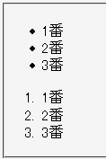
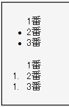

リスト要素に上パディング、リストアイテム要素にwidthまたはheightプロパティを指定したとき、最初のリストアイテムのリストマーカーが消える。
順序つきリストのリストアイテム要素にwidthまたはheightプロパティを指定したとき、2番目以降のリストアイテムの番号がすべて1番目を表すものになる。
<ul style="padding-top:1px;"> <li style="width:90%;">1番</li> <li style="width:90%;">2番</li> <li style="width:90%;">3番</li> </ul> <ol style="padding-top:1px;"> <li style="width:90%;">1番</li> <li style="width:90%;">2番</li> <li style="width:90%;">3番</li> </ol>
前者のリストは1つ目の不具合を、後者のリストは2つの不具合を両方とも発生させています。
Netscape7.1標準モード
WinIE6.0標準モード
li要素以外の要素でdisplayプロパティにlist-item値を明示することで生成したリストアイテム要素で、2番目の不具合は発生しません。
<div style="padding:0 0 0 2em;"> <div style="display:list-item; list-style-type:decimal; width:90%;">1番</div> <div style="display:list-item; list-style-type:decimal; width:90%;">2番</div> <div style="display:list-item; list-style-type:decimal; width:90%;">3番</div> </div>